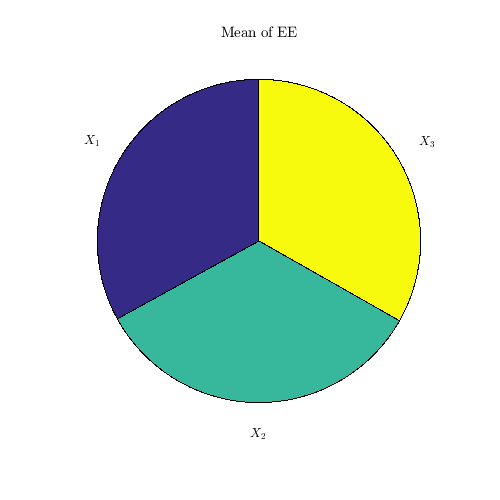
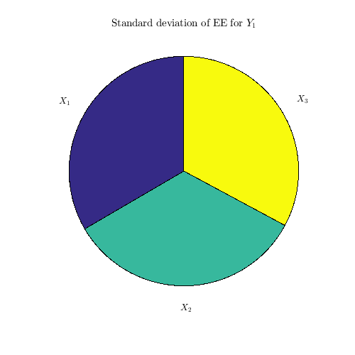
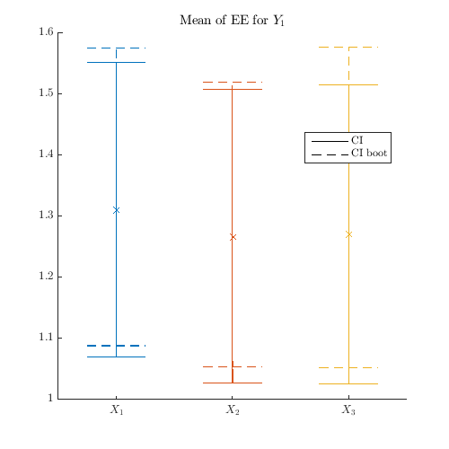
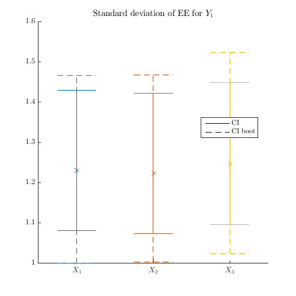

Examples / Sensitivities / dgsm
This file is a complete demo of the capability of the dgsm function from the CODES toolbox.
Contents
Documentation
The documentation for the dgsm class can be found here.
Set rng
Set random number generator seed:
rng(0)
Simple example
Compute derivative-based measures using all three kind:
f=@(x)1/8*prod(3*x.^2+1,2); X=rand(100,3);dY=CODES.common.grad_fd(f,X); res=CODES.sensitivity.dgsm(dY,'type',{'EE','DGSM1','DGSM2'}); disp(res.EE.mu) disp(res.DGSM1.mu) disp(res.DGSM2.mu)
dX_1 dX_2 dX_3
dY_1 1.37836 1.3614 1.40165
dX_1 dX_2 dX_3
dY_1 1.37836 1.3614 1.40165
dX_1 dX_2 dX_3
dY_1 3.40016 3.462 3.38932
Pie plot
Compute sensitivity indices and plot them (pie):
f=@(x)1/8*prod(3*x.^2+1,2);
X=rand(100,3);dY=CODES.common.grad_fd(f,X);
CODES.sensitivity.dgsm(dY,'pie_plot',true);
  Error plot
Compute sensitivity indices and plot them (error) using approximated and bootstraped confidence interval:
f=@(x)1/8*prod(3*x.^2+1,2); X=rand(100,3);dY=CODES.common.grad_fd(f,X); CODES.sensitivity.dgsm(dY,'err_plot',true,'CI_boot',true,'CI',true); 
Copyright © 2015 Computational Optimal Design of Engineering Systems (CODES) Laboratory. University of Arizona.
|
|
Computational Optimal Design of Engineering Systems |

|